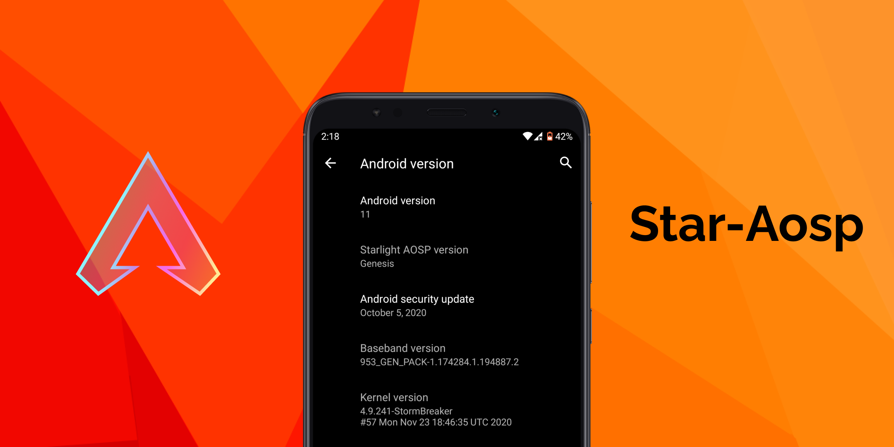

AOSP based Custom ROM for Redmi 5 Plus

Welcome to new era of ROM making, specialized for this device in particular.
Star AOSP is my own ROM with minimal customizations & user friendly optimizations aimed towards performance and stability. You will not regret using this ROM as a daily driver because of how fast it performs. Why I proclaim this ROM to be the best? Because the benchmarks are better than those provided by Xiaomi's MIUI 11 for this device since I work on the device twice every week. This ROM is completely OpenSource and uses Google's AOSP code base. You can help development of this ROM by reporting me all the bugs so I can fix them up and make this ROM what it deserves to be, the greatest of all made for this device in particular.
List of customization of this ROM :
- Always based on latest AOSP sources with latest security patch
- Network Traffic Indicators
- Face unlock
- Old Mobile data style
- Music volume key control
- Long press for torch
- Icon shape, Accent and Font settings under display settings
- VoLTE/4G data icon switch
- Notification History
- Pixelize some stuff
- Three finger swipe to Screenshot
- Navigation bar length customisation ( from long to hidden )
- Tons of miscellaneous fixes over AOSP code
- Call recording in default dialer
- Kill app, Clearall and Screenshot button in Recents
- Sync, Reboot and ScreenRecord QS Tiles
- Beautify QS data, flashlight & airplane mode icon from Fluid
- Advanced Reboot menu
- Allow disabling screenshot sound & reduce button timeout
- Project404's extended volume panel ui
- ExactCalculator App from ProtonAOSP
- Click on icon in App info screen to open that app
- New default wallpaper by Akos Paha
What's Working :
- Wi-Fi
- RIL
- VoLTE
- Mobile data
- Camera
- Flashlight
- Camcorder
- Fingerprint
- Sound / vibration
Bugs :
- WFD might not work ( not tested at all because I don't own additional equipments to test this features )
- Sensor not working
- Report me any additional bugs here in my support group
Important Notes :
- This ROM does not come with a messaging app by default. You're recommended to use this messaging app, hardwork of Moez Bhatti, licensed under GPL v3
- SeLinux is Permissive as of now
- Recommended package of Gapps is latest NikGapps Basic Variant
- Please use updated OrangeFox recovery or else your recovery partition is wiped away.
- Do NOT use Antutu bullshit benchmark to compare performance. Use Benchkit Magisk module if you want and compare with different kernels available for this device
- First boot will take few minutes! Have patience. Clean Flash is always recommended!
Installation :
- Backup each and every partition from TWRP/OrangeFox Recovery(optional)
- Make a full wipe (system, vendor, data, cache, dalvik)
- Flash StarAOSP ROM zip (Check downloads section)
- Flash gapps
- Reboot to System
Downloads :
→ Initial Release :
Direct Download
Google Drive Mirror
Want progress updates about new build?
Join my telegram support group where you can report bugs and get updates about them faster.
Click here to know more
Want to contribute to my work?
ROM Source Code: Here
Device Tree: Here
Vendor Tree: Here
Kernel Tree: Here
Big Thanks to :
Saalim Quadri, KenHV, Akos Paha (my tester), Pavel Petrov, Sebastiano Barezzi, Lau, Ruturaj Kadam, Rama (for porting 4.9 to vince), ShapeShiftOS, Project Fluid, LineageOS, AwakenOS, RevengeOS and other developers/team who I cherrypicked from for their work.